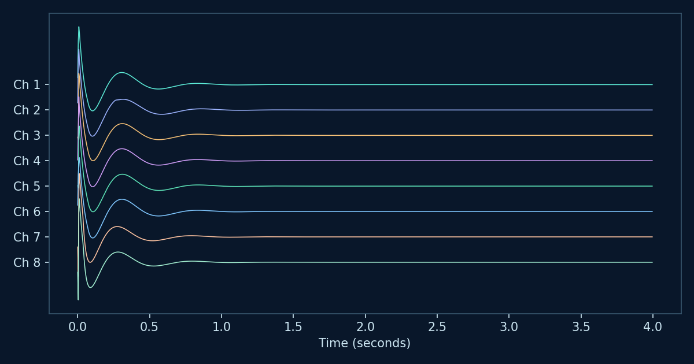
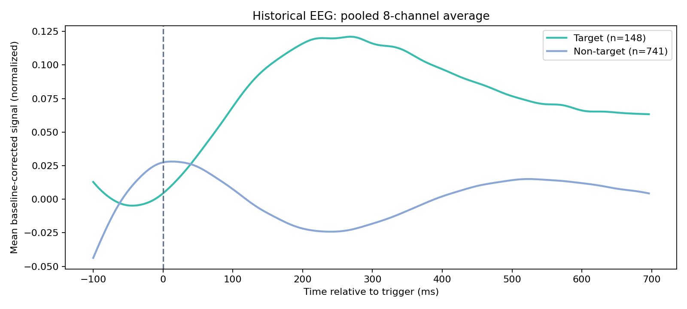
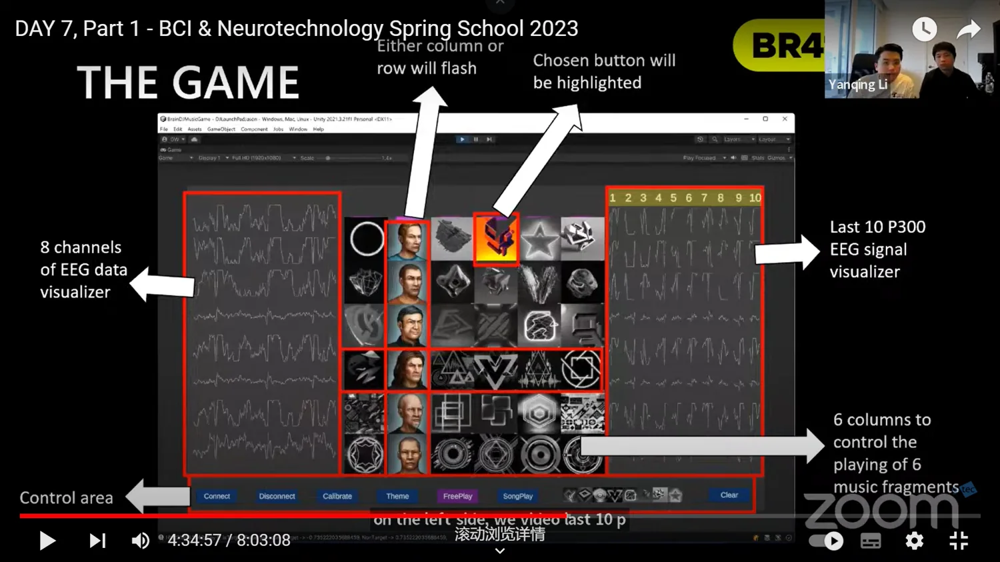
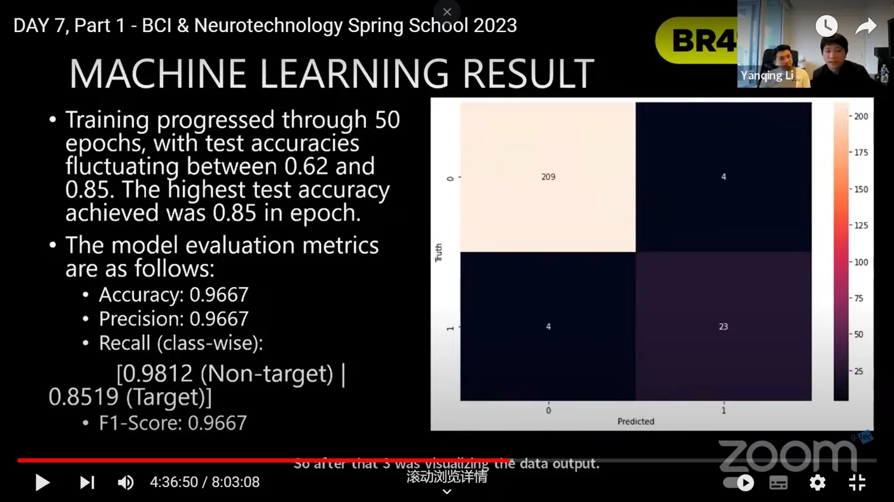
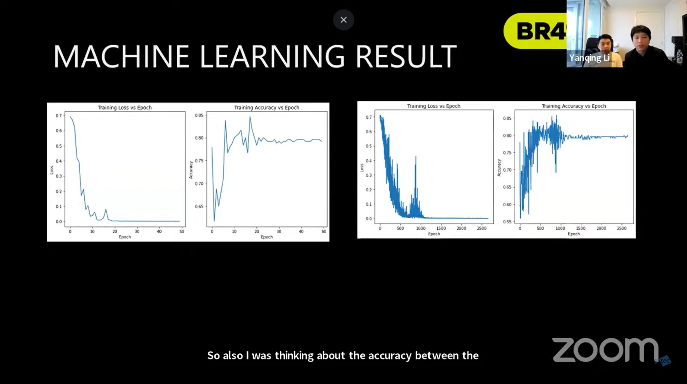
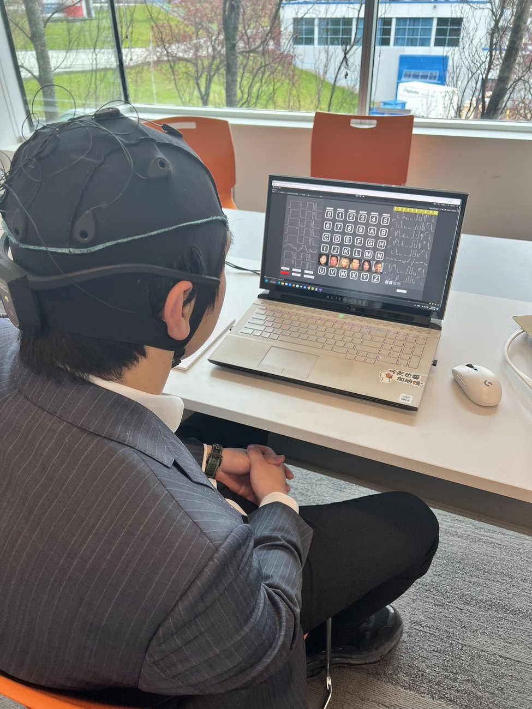
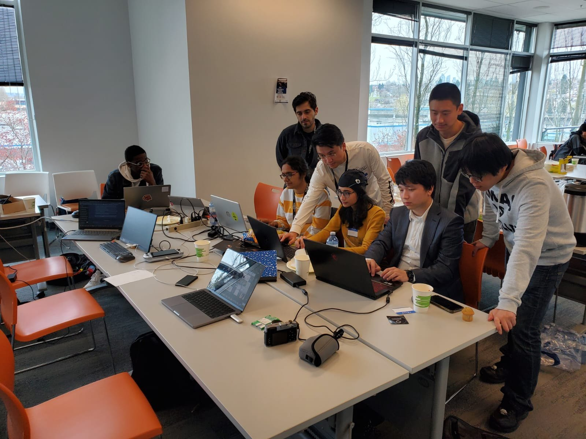
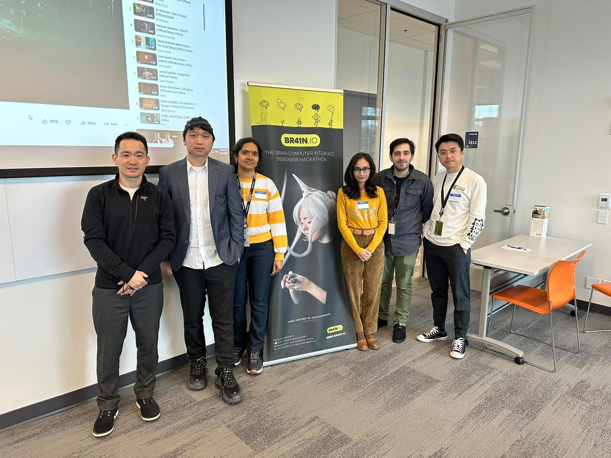

Type With Your Brain.
Could a computer work out which letter you are focusing on by analyzing EEG responses?
At the 2023 BR41N.IO Hackathon, I focused on processing EEG recordings, developing machine learning classifiers, and exploring ways to balance prediction accuracy with processing time.
From attention to a letter prediction
Pay attention
Focus on a target character in a grid.
Watch flashes
Rows and columns light up. A relevant flash may elicit a P300 response.
Decode
Classify repeated EEG responses and infer the character at the row-column intersection.
P300 is an event-related response associated with attention to a target stimulus; this is not eye tracking or mind reading.
Brain Typing Challenge
Pick a character, then watch rows and columns flash. The game uses simulated EEG-like responses to guess your choice. Try different noise levels and scan rounds to see how repeated measurements can help. This is a teaching game, not live brain reading.
Simulated EEG response
Awaiting stimulus
How the system makes its guess
Start a scan to see which row and column the simulation predicts.
View all 11 classifier evidence scores
0 / 3 rounds
Evidence is simulated, not generated by the historical GRU model. Errors are possible when noise overwhelms target responses.
Understand the Decision in 30 Seconds
Think of the screen as a grid. You focus on D while rows and columns flash. Your brain may react differently when a flash includes the letter you are watching. The system compares those reactions over repeated flashes, then combines the strongest row and column to make a guess.
Illustrative sequence, not a recording of a particular 2023 trial.
Inside Our EEG Recordings
Three snapshots from the original project: the recorded signals, an example of event-related averaging, and a historical model evaluation. These recordings are not used by the game above.

01 · Eight EEG channels
Eight channels capture changing electrical activity over time. Signal cleaning helps make useful patterns easier to examine.

02 · Target vs non-target
Averaging repeated events from s1.mat helps reveal differences between target and non-target responses. This plot is illustrative, not proof of classification accuracy.
03 · GRU model evaluation
Our 2023 presentation reported 96.67% accuracy for one historical evaluation. The original testing setup and attribution of this specific result to the GRU configuration have not yet been independently verified.
How was the real EEG data processed?
s1.mat: 8 channels at 250 Hz; 148 target and 741 non-target usable event windows, from −100 to +700 ms. The portfolio plots use 1–20 Hz filtering, baseline correction, and normalization. These presentation choices may differ from the original 2023 model pipeline.
My Role: From Signals to Predictions
EEG data processing
Extracted stimulus-aligned EEG windows and prepared multichannel time-series features.
Model development
Explored GRU-based models to distinguish target and non-target responses.
Performance
Explored training configurations and processing time alongside classification performance.
Historical reported metric only; independent reproduction and generalization have not been verified. Not the accuracy of the interactive simulation.
Technical notes and model restoration status
The original PyTorch state dictionary is available. Full inference validation requires reconstructing the exact model, matching preprocessing and label semantics, and evaluating on held-out data. The game above intentionally does not use the model weights.
Why We Explored GRU
EEG is a time series: the order and timing of signal changes matter. Our Python code uses a Gated Recurrent Unit (GRU) network to learn patterns across successive samples, then a classification layer to produce predictions.
A starting point
Processes sequences, but can struggle to retain useful information across longer stretches of data.
GRU
Uses gates to control what information to keep or update, with a relatively compact architecture.
LSTM
Also handles sequence dependencies using a more elaborate memory mechanism. It can be valuable, but is not automatically more accurate.
Why this was a reasonable candidate: GRUs typically use fewer parameters than similarly sized LSTMs, making them worth exploring when processing time matters. Our saved code confirms GRU implementations, but does not establish a controlled GRU-versus-LSTM benchmark or prove that GRU was faster in this project.
Technical notes from the original code
The uploaded EEGClassifier variants use PyTorch nn.GRU and a fully connected output layer. Some versions also explore filtering, class balancing with SMOTE, and different training configurations. Historical model metrics should not be interpreted as independently reproduced results.
From the Original Hackathon
These screenshots were captured during our 2023 presentation. They document the original game interface and historical model experiments—not the simulated portfolio experience above.

EEG monitoring and the game control panel shown during the hackathon presentation.

Historical classification results presented by the team; not independently reproduced or verified against an exact GRU configuration.

Loss and accuracy curves used to discuss model convergence and variability.
Original presentation recording: YouTube livestream (2023) · Currently private; external link retained for historical reference.
The People Behind the Experiment


